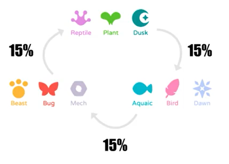

Ventajas Tipo
TIPs
Ataques Combinados : Cuando los Axises atacan con dos o más cartas en una ronda, los combos agregan más daño.
Ataques Encadenados : Chain es cuando un axie juega una carta de un tipo y otro aliado juega otra carta del mismo tipo
Ejemplos:

Predice el ataque : Debes estar atento al Axi que atacara a tu enemigo para escudarlo o sacrificarlo
Debuffos
 Stun –El Axie se salta su siguiente ataque o defensa. Permanece hasta que el Axie intenta atacar o sea atacado.
Stun –El Axie se salta su siguiente ataque o defensa. Permanece hasta que el Axie intenta atacar o sea atacado. Aroma – El Axie atraerá todos los ataques entrantes. Durante un tiempo determinado.
Aroma – El Axie atraerá todos los ataques entrantes. Durante un tiempo determinado. Chill – El Axie no puede entrar en el «Last Stand». Durante un tiempo determinado.
Chill – El Axie no puede entrar en el «Last Stand». Durante un tiempo determinado. Fear – El Axie no puede atacar. Durante un tiempo determinado.
Fear – El Axie no puede atacar. Durante un tiempo determinado. Fragile – El escudo recibe un 200% de daño. Durante un tiempo determinado.
Fragile – El escudo recibe un 200% de daño. Durante un tiempo determinado. Jinx – El Axie no puede dar golpes críticos. Durante un tiempo determinado.
Jinx – El Axie no puede dar golpes críticos. Durante un tiempo determinado. Lethal – El siguiente golpe que recibe de este Axie es siempre un golpe crítico. Se mantiene hasta que es atacado.
Lethal – El siguiente golpe que recibe de este Axie es siempre un golpe crítico. Se mantiene hasta que es atacado. Poison – El Axie pierde 2hp cada turno (por cualquier equipo). Puede stakearse. Permanece hasta que se retira.
Poison – El Axie pierde 2hp cada turno (por cualquier equipo). Puede stakearse. Permanece hasta que se retira. Sleep – El Axie no puede defenderse la próxima vez que sea atacado. Permanece hasta que el Axie intenta atacar.
Sleep – El Axie no puede defenderse la próxima vez que sea atacado. Permanece hasta que el Axie intenta atacar. Stench – El Axie se ignora cuando hay 2 o más objetivos. Durante un tiempo determinado.
Stench – El Axie se ignora cuando hay 2 o más objetivos. Durante un tiempo determinado. Speed Down – Reduce la velocidad del Axie en un 20%. Durante un tiempo determinado. Puede acumularse.
Speed Down – Reduce la velocidad del Axie en un 20%. Durante un tiempo determinado. Puede acumularse. Morale Down – Disminuye la moral del Axie en un 20%. Durante un tiempo determinado. Puede acumularse.
Morale Down – Disminuye la moral del Axie en un 20%. Durante un tiempo determinado. Puede acumularse. Attack Down – Disminuye el ataque del Axie en un 20%. Permanece hasta el siguiente ataque. Puede acumularse.
Attack Down – Disminuye el ataque del Axie en un 20%. Permanece hasta el siguiente ataque. Puede acumularse.
Buffs
 Acelerar – Aumenta la velocidad de los Axies en un 20%. Durante un tiempo determinado. Puede acumularse.
Acelerar – Aumenta la velocidad de los Axies en un 20%. Durante un tiempo determinado. Puede acumularse. Morale Up – Aumenta la moral de los Axies en un 20%. Durante un tiempo determinado. Puede acumularse.
Morale Up – Aumenta la moral de los Axies en un 20%. Durante un tiempo determinado. Puede acumularse. Attack Up –Aumenta el ataque de los Axies en un 20%. Se mantiene hasta el siguiente ataque. Puede acumularse.
Attack Up –Aumenta el ataque de los Axies en un 20%. Se mantiene hasta el siguiente ataque. Puede acumularse.
Last Stand
Cuando tu Axie queda en una cifra negativa de vida cercana a 0, entras en modo Last Stand que depende de su moral, en este estado gana una cantidad x de contadores, donde se van removiendo por cualquier carta jugada o golpe que reciba hasta terminar el estado y finalmente morir
Iniciativas
La velocidad determina el orden de las acciones, tenlo siempre presente